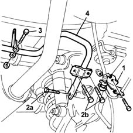
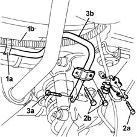

4420C10 rear suspension stabilizer bar - r+r
- Path
- Procedures > 44 SUSPENSION AND WHEELS > 4420 REAR SUSPENSION > 4420C rear suspension stabilizer bar/links > 4420C10 rear suspension stabilizer bar - r+r
- Kind
- repair procedure (removal / refitting; the operation number is the code)
- Applies to
- all engines; all production periods
- Interactive page
- https://sloeber94.github.io/elrnDB-fMltpl/en/#/2891726
Applies to: all engines; all production periods
 Removing
Removing
 Refitting
RefittingPosition the vehicle on a lift and raise it.
1. Move the handbrake cable and left and right brake pipes mounting brackets, undoing the bolts fixing them to the track control arms to facilitate access to the anti-roll bar.
2. Undo the bolts (2a) fixing the anti-roll bar to the track control arms and the bolts (2b) for the left and right U-bolts.
3. Undo the bolt fixing the load proportioning valve bracket to the anti-roll bar.
4. Remove the rear anti-roll bar.

Applies to: all engines; all production periods
Refitting
RemovingReposition the anti-roll bar.
Tighten the bolts fixing the anti-roll bar to the left and right track control arms to torque.
 | Fastening | Component | Ø | Value (daNm) |
|---|---|---|---|---|
- | Bolt | REAR ANTI-ROLL BAR | M10 x 1.25 | 5.6 |
Tighten the bolts for the U-bolt securing the anti-roll bar to the left and right track control arms to torque.
| Fastening | Component | Ø | Value (daNm) |
|---|---|---|---|---|
- | Bolt | REAR ANTI-ROLL BAR | M8 | 3 |
Tighten the bolt fixing the load proportioning valve bracket to the anti-roll bar, paying attention to position the bracket on the milled part of the bar, to torque.
| Fastening | Component | Ø | Value (daNm) |
|---|---|---|---|---|
- | Bolt | LOAD PROPORTIONING VALVE | M8 | 2 |
Reposition and tighten the bolts for the brackets securing the handbrake cable and brake pipes to the track control arms to torque
| Fastening | Component | Ø | Value (daNm) |
|---|---|---|---|---|
- | Bolt | HANDBRAKE LINKAGE MOUNTS | M8 | 2.5 |
Lower the left and remove the vehicle.
Applies to: all engines; production: da 09/03, da 04/02 a 08/03
Removing
RefittingPosition the vehicle on the ramp.
Disconnect the battery negative terminal.
 | Name | Connector |
|---|---|---|
- | Battery |
1. Open the bands (1a) and release the left and right rear wheel handbrake cable (1b).
2. Undo the bolts (2a) fixing the flexible rear brake pipes and the bolts (2b) fixing the U-bolts securing the anti-roll bar to the left and right track control arms.
3. Undo the fixing bolts (3a) and remove the anti-roll bar (3b).

Applies to: all engines; all production periods
Refitting
RemovingReposition the anti-roll bar.
Tighten the bolts fixing the anti-roll bar to the left and right track control arms to torque.
| Fastening | Component | Ø | Value (daNm) |
|---|---|---|---|---|
- | Bolt | REAR ANTI-ROLL BAR | M10 x 1.25 | 5.6 |
Tighten the bolts for the U-bolt securing the anti-roll bar to the left and right track control arms to the recommended torque.
| Fastening | Component | Ø | Value (daNm) |
|---|---|---|---|---|
- | Bolt | REAR ANTI-ROLL BAR | M8 | 3 |
Tighten the bolts fixing the brake pipe mounting brackets to the track control arms to the recommended torque.
| Fastening | Component | Ø | Value (daNm) |
|---|---|---|---|---|
- | Bolt | HANDBRAKE LINKAGE MOUNTS | M8 | 2.5 |
Close the bands retaining the handbrake cable to the anti-roll bar.
Connect the battery negative terminal.
| Name | Connector |
|---|---|---|
- | Battery |
Lower the left and remove the vehicle.